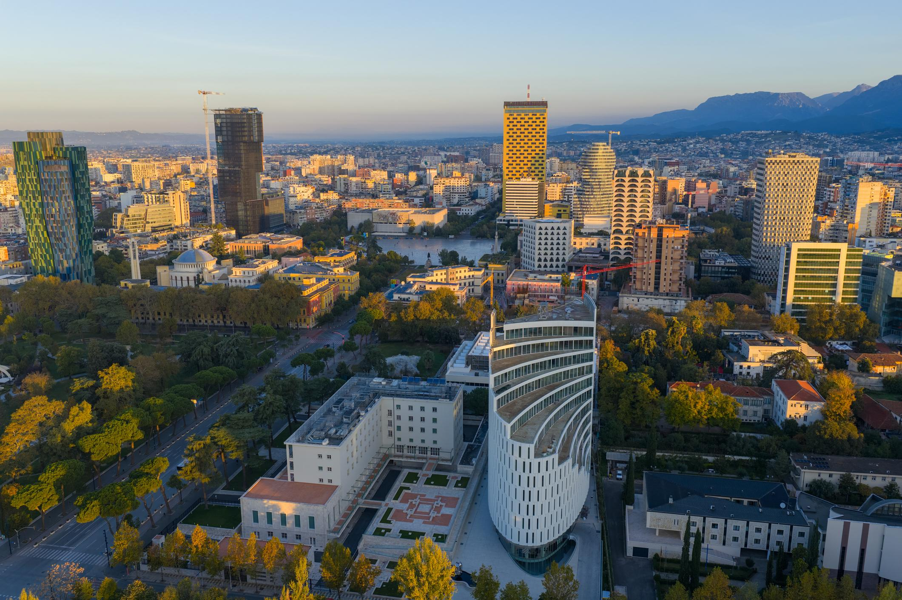
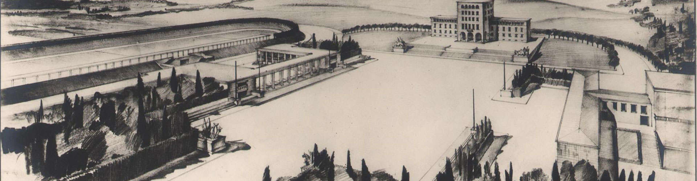
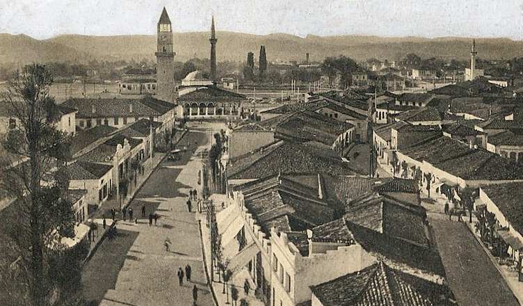
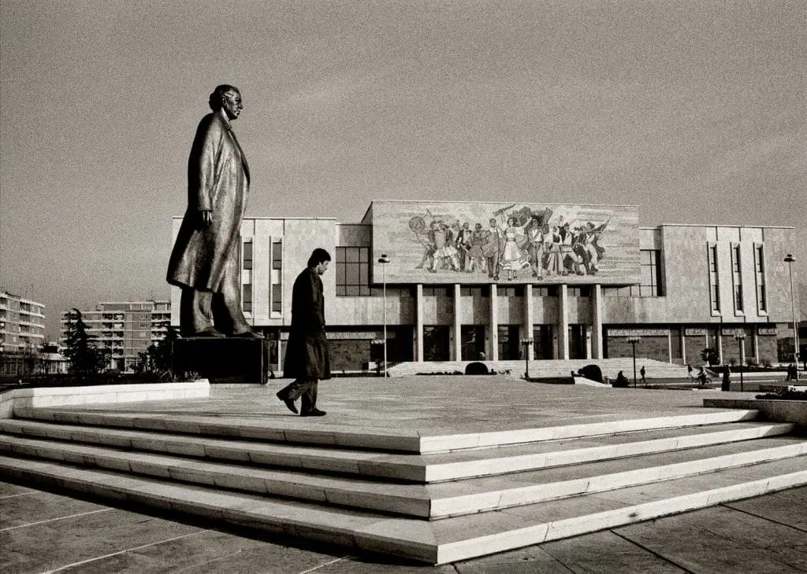

<link rel="stylesheet" href="style.css">
<header class="main-header">

  <div class="logo">
    <a href="index.html">Discover Albania</a>
  </div>

  <nav class="menu">
    <a href="index.html">Home</a>
    <a href="cities.html">Cities</a>
    <a href="explore.html">Explore</a>
    <a href="#">Food</a>
    <a href="#">Nature</a>
    <a href="#">Contact</a>
  </nav>

</header>

<section class="cities-header">
  <h1>Tirana</h1>
  <p>The vibrant capital of Albania</p>
</section>

<section class="city-pro">

  <div class="city-pro-image">
    
    
  </div>

  <div class="city-pro-text">
    <h2>About Tirana</h2>
    <p>
      Tirana is the capital city of Albania, known for its colorful
      architecture, lively cafes, museums and modern lifestyle.
      It combines history with contemporary culture.
    </p>
  </div>

</section>
<section class="city-story">

  <div class="story-container">

    <h2>The Story of Tirana</h2>

    <p>
Tirana, the vibrant heart of Albania, is a city where history and modern
life blend together in a unique and colorful way. Although today it is a
lively European capital, Tirana began as a small settlement in the early
17th century. In <strong>1614</strong>, Sulejman Pasha Bargjini founded the
town by building a mosque, a bakery, and a traditional Turkish bath,
creating the first center of community life and laying the foundations
for the city’s future development.
</p>

<p>
For centuries after <strong>1614</strong>, Tirana remained a modest Ottoman
town shaped by local traditions, trade, and religious coexistence.
Markets and artisan workshops helped the settlement grow steadily,
turning it into an important regional center connected to surrounding
Balkan cities through commercial routes and cultural exchange.
</p>

<p>
A major turning point came in <strong>1920</strong>, when Tirana was officially
declared the capital of Albania. This decision transformed the city from
a quiet provincial town into the political and administrative heart of
the country. New institutions, boulevards, and public buildings were
constructed, influenced partly by European and Italian urban planning
ideas that modernized the city’s appearance.
</p>

<p>
Between <strong>1944 and 1991</strong>, during the communist era, Tirana
underwent dramatic transformation. Wide boulevards, monumental
architecture, and standardized residential buildings reshaped the urban
landscape. Industrialization and population growth expanded the city,
leaving a strong architectural and social legacy that remains visible
today.
</p>

<p>
After the fall of communism in the early <strong>1990s</strong>, Tirana entered
a new period of openness and rapid change. Democratic reforms,
international connections, and private initiatives brought new energy
to the city. Colorful building renovations, lively cafés, and cultural
activities transformed Tirana into a dynamic and youthful European
capital.
</p>

<p>
Today, in the <strong>21st century</strong>, Tirana continues to evolve through
modern urban projects, green spaces, and cultural innovation. The city
represents a living timeline where Ottoman heritage, communist history,
and contemporary European lifestyle coexist, offering visitors a unique
experience shaped by centuries of transformation.
</p>

  </div>
  <div class="history-block">

  

  <div class="history-text">

    <h3>1614 — Foundation of Tirana</h3>

    <p>
      In 1614, Tirana was officially founded by Sulejman Pasha Bargjini,
      marking the beginning of the city’s urban and cultural development.
      The settlement grew around a mosque, a bakery, and a public bath,
      becoming an important center for trade and social life.
    </p>

    <p>
      This foundation laid the basis for Tirana’s transformation into
      the capital city it is today, blending Ottoman heritage with
      modern European identity.
    </p>

  </div>
 <div class="history-block">

  


  <div class="history-text">
    <h3>1920 — Tirana Becomes the Capital</h3>
    <p>
      In 1920, Tirana was officially declared the capital of Albania.
      The city began transforming from a small Ottoman town into the
      political and cultural center of the country.
    </p>
  </div>

</div>

    <div class="history-block">
        

        <div class="history-text">
            <h3>1944–1991 — Communist Era</h3>

            <p>
                Between 1944 and 1991, Tirana experienced major transformation
                under the communist regime. The city expanded with socialist
                architecture, wide boulevards, public institutions, and
                standardized residential buildings. This period reshaped the
                urban identity of Tirana and left a strong architectural and
                cultural legacy still visible today.
            </p>
        </div>
    </div>

</section>

<section class="location-section">

  <h2>Location</h2>

  <div class="map-container">
    <iframe
      src="https://maps.google.com/maps?width=100%25&amp;height=400&amp;hl=en&amp;q=Tirana+(Tirana)&amp;t=&amp;z=12&amp;ie=UTF8&amp;iwloc=B&amp;output=embed"
      loading="lazy">
    </iframe>
  </div>
<a href="https://www.google.com/maps/dir/?api=1&destination=Tirana"
   target="_blank"
   class="map-btn">
   Get Directions
</a>
</section>
<div id="lightbox">
  <span id="close">&times;</span>
  
</div>
 <div id="lightbox">
    <span id="close">✕</span>
    <button id="prev">❮</button>
    
    <button id="next">❯</button>
  </div>
<script src="script.js"></script>